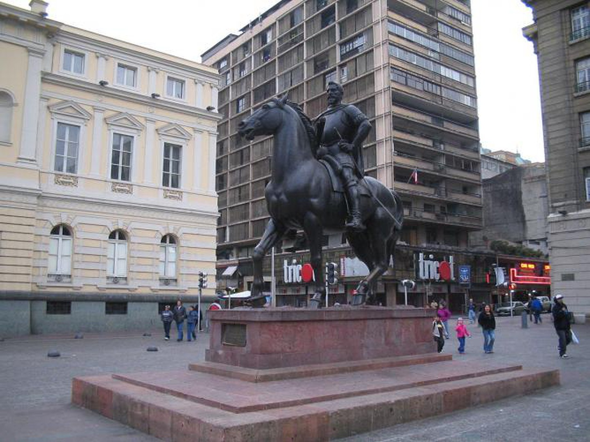
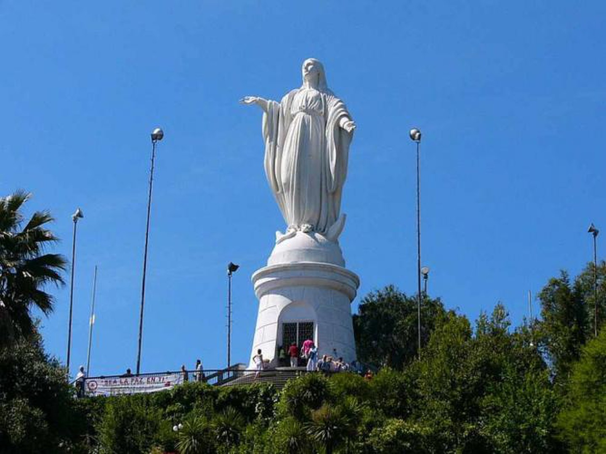
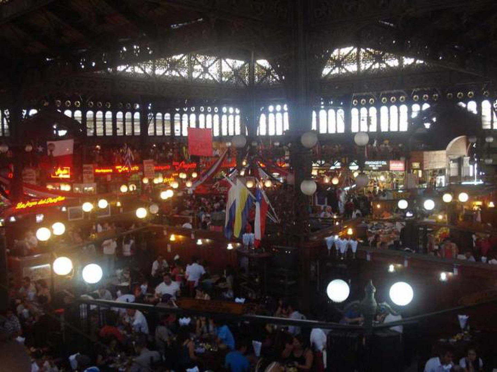
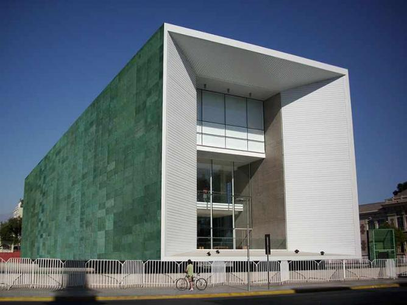
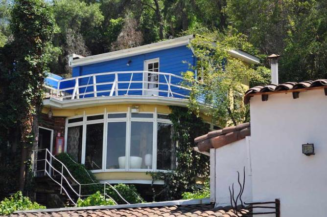

TOP FESTIVALS AND EVENTS IN SANTIAGO
A bustling city like Santiago de Chile has a lot to offer to its tourists. From museums to markets, there is something for everyone to discover. Here is list of the top 10 things not to miss in Chile’s capital.
Plaza de Armas
Considered the historical centre of Santiago, the Plaza de Armas is an important square to modern day Chile. Lined with palm trees, the square is surrounded by many historic buildings, such as the beautiful Metropolitan Cathedral, the Central Post Office and the Royal Court Palace. Within the square, locals gather to relax and painters sell their work, but in general it is a highly multicultural area. There are also many monuments, one of which is dedicated to Pedro de Valdivia, the founder of the city and conqueror of Chile. To get a taste of Santiago, the Plaza de Armas is a good place to start.

Cerro San Cristóbal
Officially called Parque Metroplitano, Cerro San Cristobal (San Cristobal Hill) sits in the middle of Santiago. You can hike (approximately 45 minutes up) or cycle to the 300 meter high summit. Alternatively, take a funicular which stops at different levels of the hill. Amongst various other activities and attractions, you will find the National Zoo, a Japanese-style garden and two outdoor swimming pools open during the summer. At the summit is an impressive snow white 22 meter statue of the Virgin Mary looking out onto a spectacular panoramic view of the city; this view is a must see in Santiago.

The Markets
Amongst Santiago’s many street markets (ferias), some of the most notable are Los Domínicos and Santa Lucía, traditional arts and handicrafts markets. There you will find souvenirs and handicrafts at the best price in the city, such as the famous alpaca wool ponchos. Although nowadays the ferias are somewhat aimed at tourists, it is not completely devoid of authentic tradition, so visiting them is an excellent way to discover Chile’s folkloric culture. Another notable market is the Mercado Central. Located in the city center, it is considered a historical landmark and was ranked the fifth best market in the world by the National Geographic. The products to try here are the shellfish, the pisco sour, both of which are national favorites.

Museo de la Memoria y de los Derechos Humanos
For lovers of all forms of dance, this is not to be missed. For 15 days in late August, Berlin’s international dance festival, Tanz im August, collects some of the world’s biggest names in dance in a series of spectacular performances.
See the most important global dance trends of the moment displayed by the world’s best performers at an event that is sure to astound and awe.

La Chascona House
La Chascona was one of three homes to Chile’s Nobel Prize winning poet, Pablo Neruda. The quirky architecture and vivid colors mirror Neruda’s individual style, making it a fascinating attraction for all of those who are interested in learning about the great artist’s life as well as the history of the house. The magic continues in La Chascona’s garden, which hangs over the streets of the Bellavista neighborhood, a popular area of Santiago also well worth visiting for its bohemian atmosphere and fashionable restaurants.

After a long day of festivities a lil rest or recollection is needed. Many services including massages, high end dining and cuisine, can be provided by many hotels in the city. Affordable yet comfortable in every way posssible, the following hotels not only have the best views in berlin but are worth the dollar when it comes to providing prime comfortability, peace and relaxation.
For Bookings in any hotel in Santiago.......click the link below Click Here